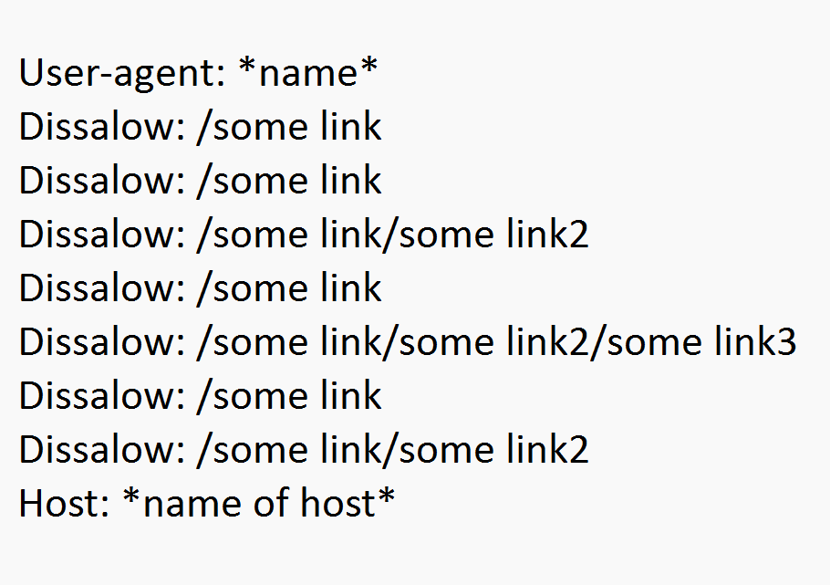
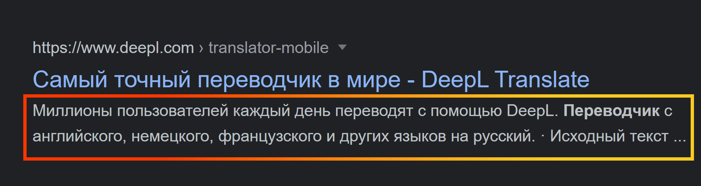
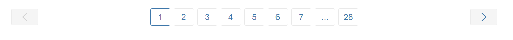

Взаємодія з сайтом
Впровадження семантики у контент сайту
Це відбувається в:
-
<title> </title>
- Короткий та ємний опис сторінки;
- Основні фрази ближче до початку;
- Читабельний текст без переспаму ключових фраз;
- Загальна кількість символів: 140, до 12 слів;
- Повинен бути унікальним для свого сайту;
- У кінці не ставити крапку!
- Помістити всю головну інформацію у перші 50 символів;
- Не повинно бути розділових знаків, таких як: . , ! , ; , ? , | (але якщо треба якось поділити ключові фрази, | непоганий спосіб) ;
- Не треба дублювати ключі, використовуйте синоніми;
- Назва бренда, компанії у кінці, якщо супер популярна компанія (Apple, Rozetka, Chanel, то краще на початку);
- Для проектів родом з США краще писати кожне слово з великої літери;
-
Не дублювати ваш
<h1>.
-
<h1></h1> <h2></h2> <h3></h3> <h4></h4> <h5></h5> <h6></h6>
Вимоги до оформлення H1:
- Використовувати лише 1 раз на сторінці;
- Не дублювати тайтл;
- Не більше 7-8 слів;
- Має у собі ключове слово;
- Це текст для людини, то ж без перечислення запитів;
- Також бажано сюди додати самий частотний запит за тематикою заголовка;
- SEO текст (написанний з урахуванням факторів ранжування, на основі семантичного ядра абзац з інформацією);
-
Основному/додатковому контенті, наприклад у картинці:
Найвдалішим варіантом буде написати що конкретно зображено на картинці, наприклад якщо тут ноутбук - конкретну модель, колір, конфігурацію пам'яті...
<img alt="ось тут" src="...">
- Враховується павуками під час індексації;
- Дозволяє брати участь у пошуці по картинках;
- Збільшує релевентність вмісту веб-сторінки для пошукових запитів;
- Дає можливість користувачу дізнатися що на картинці, якщо у нього поганий зв'язок, або чомусь зображення нема;
- Анкори посилань:
<a href="..."> <p>ось тут</p>
</a>
Краулінговий бюджет
Трохи про краулінговий бюджет. Це час, який є у паука, щоб проіндексувати ваш сайт, він обмежений, для того щоб уникнути перегрузки на бота, це дуже важливий момент, бо наприклад список циї факторів може просто зіпсувати внесення вашого сайту в індекс:- Смітникові сторінки;
- Дублі контенту;
- Редиректи;
- Непросувні сторінки;
- Биті посилання.
Оптимізація краулінгового бюджету:
- Налаштування sitemap.xml та robots.txt (про це далі);
- Якісне налаштування перелінковок;
- Покращити швидкість завантаження сайту;
- Збільшення зовньої посилальної маси;
- Оптимізувати редиректи.
Sitemap/Robots
Це файли, які зберігаються у корінні сайту, для кращої індексації сайту, зараз розглянемо їх окремо:
sitemap.xml - це мапа сайту, яка
фактично є катологом посилань, які ведуть на усі сторінки сайту.
Таке супер актуально наприклад під час індексації вебдодатку, де
1000+ сторінок. У цього типу файла є також своя розмітка,
рекомендую вам з нею
ознайомитися, якщо ви хочете займатися seo просуванням, ось приклад цього
синтаксису з інтернету:
-
Використовуються обов'язкові теги
<urlset>, <url>, <loc>; - Не містить у собі сторінки з посиланням canonical(про canonical в мета тегах);
- Містить у собі тільки відкриті для індексування сторінки;
robots.txt - цей файл дозволяє
керувати скануванням павука веб сторінок вашого сайту. Такі
сторінки все одно є у результатах пошуку, але без опису. Ще можна
(аде не рекомендується) забороняти деякі види сторінок через
роботс:
- Сайти-дзеркала;
- Сторінки з різними формами заповнення;
- Сторінки з результатами пошуку;
- Сторінки з особистою інформацією користувача.

Мета теги
Фактично мета теги з самого початку були для SEO, бо ті ж самі <title></title>,
<h1></h1> , як на мене, можуть зробити
ідеальний сніпет для сторінки, доречі для цього вони і потрібні, щоб
модернізувати той самий сніпет, зробити його більш інтерактивним
завдяки таблицям на сайті, додати якийсь заманюючий опис,
заголовок... Також головна роль таких тегів покращити індексацію
сторінки, тобто зробити роботу для павука простішою.
Ось доречі спосіб, як зробити таку штуку:
- Додавати таблицю після seo тексту;
-
Додавати текстову частину через тег
<h4>; - Товари виводити за популярністю, або за мінімальною ціною;
- Мінімум з 2 стовпцями та 5 рядками;
<meta name="description" content="..."> - Мета
тег, в якому записується опис сайту в head
- Ви напряму даєте ПС свій опис сайту;
- Він не бере участь у текстовому ранжуванні;
- Тут буде ідеально написати навіть невиликий параграф, головне зробити його максимально інформативним і зрозумілим;

Головні вимоги до опису:
- Повинен спонукати користувача перейти до сайту;
- Розмір від 70 до 260 символів;
- Головні слова на початку, потім синоніми, ключі і т.п.;
- Повинен оголошувати конурентну перевагу бізнесу;
- Повинен спонукати до конкретної дії;
- Закнічуватися на . або !;
- Не дублює тайтл;
- При формуванні також не забуваємо про нашу семантику;
<meta name="robots" content="..."> - Мета тег, в
якому записується відключення індексації сторінки за допомогою
nofollow, або noimageindex для зображень.
<link rel="canonical" href="..."> - Мета тег,
який використовується для вказівки сторінки, на якій знаходиться
контент-дубль.
<meta name="prerender-status-code" content="404">
- Мета тег, який допомагає відмітити сторінку, яка буде
сигналізувати про помилку 404.
Далі йдуть не завжди потрібні теги!
<meta name="keywords" content="..."> - Мета тег,
в якому записуються слова, які характеризують наш сайт
<meta name="author" content="..."> - Мета тег, в
якому записується автор сторінки
<meta name="copyright" content="..."> - Мета
тег, в якому записується власник авторських прав
<meta name="address" content="..."> - Мета тег,
в якому записується адрес компанії.
Редиректи
Види:
- 301 і 308 - постійне перенаправлення. Таке використовують коли сторінка змінила локацію назважди, наприклад після оновлення.
- 302 і 307 - тимчасове перенаправлення.
- Meta Refresh - мета тег, завдяки ньому сторінка браузера перезавантажується через деякий час:
<meta http-equiv="refresh" content="15
(час у секундах); *тут ще можна додати посилання* ">
Важливо знати про refresh: Якщо у
браузері вимкнен java script, оновлення не відбудеться. При такому
редиректі у старому браузері може не спрацювати кнопка назад.
Сторінки перезавантажуються автоматично, тож будте з цим обережні,
бо це може дратувати користувача. Також через цей редирект павук
може розпізнати сторінку як спам, або неправильно її
проіндексувати. У старих браузерах такий вид переходів може
працювати непраивльно.
Коли використовуємо 301 і 308:
- Якщо сторінка переїхала;
- Якщо є дублі сторінок;
- Редирект 301 з http на https;
- Редирект 301 з www. на non-www.;
- Редирект 301 з index.html на головну;
- Редирект 301 з index.php на головну.
Ось доречі додаток, який допоможе відстежувати редирект на сайті:
При роботі з редиректами також важливо оптимізовувати url, якими
будет користуватися вам клієнт:
- Не треба робити url з великою кількістю папок (/this element);
- У цих url повинна відображатися структура сайту. Наприклад: ви переходите з url: .../clothes, на якому сторінка з речами, на сторінку, де тільки жовті шарфи: .../clothes/red-scarfs. Тобто ви додаєте у url фактор людини, який є додатковою допомогою для людини у навігації;
Першоджерело
Ця інформація вам знадобиться якщо ви хочете бути першоджерелом, наприклад під час створення унікального контенту, хочеться бути впевненим що їм будете як раз ви, а не хтось, хто цей контент скопіював. Щоб точно стати першоджерелом вам потрібно:- Одразу після публікації вашого ресурсу відправте його на індексацію у google search console;
- Публікуйте цей контент в соц. мережах.
А якщо у вас ще й оптимізован сайт і його стурктура, то процес
буде ще швидше!
Також при роботі з унікальністю часто вам потрібно буде
затверджувати на офіціальному рівні те, що це саме ваш контент, а не
чийсь інший, з цим вам можливо допоможе сервіс
Creative Commons:
Коди відповідей серверу
Це набір з 3 чисел, де перша означає:- 1 - Все добре, завантаження продовжується;
- 2 - Завантаження завершено, досі все добре;
- 3 - Редирект;
- 4 - Помилка під час завантаження, щось не так у відвідувача;
- 5 - Помилка під час завантаження, помилка серверу.
- Повинно бути помітне вибачення за помилку сервера;
- Оформлення з світлим фоном і чорними буквами, НЕ в стилі сайту;
- Обов'язкові 2 кнопки: перезавантажити та повернутися на головну сторінку;
- Повинні бути методи зворотнього зв'язку, якщо у клієнта будуть якісь питання;
- Пам'ятайте, ви робите сторінку для помилок: 500, 501, 502, 503, 504, 505, 507, 510;
- 404 - Сторінка не знайдена;
- 410 - Видалення сторінки назавжди;
- 403 - Блокування сторінки зі сторони власника.
До 404 сторінки теж є свої стандарти і правила створювання. Головне
правило таке: якщо клієнт попадає на цю сторінку, він повинен
розуміти що не так, що йому робити щоб це 'відремонтувати', ось ще
перелік правил, яка повинна бути сторінка 404:
- Повинні бути прописані мета теги;
- Дизайн оформлен у стилі вашого сайту;
- Сторінка має посилання на головну сторінку, або схожих послуг/товарів, і т.п.;
- Хедер і футер від вашого сайту.
Хлібні крихти
Це додатковий спосіб навігації по вашому сайту, покращує індексацію сторінок сайту, бо павук завдяки цьому швидше сканує сайт, але не треба цим користуватися, і робити наприклад невидиме меню, гуглу таке не подобається, фактично це перелік з гіперпосилань, що створує мапу сайта:- Остання крихта не повинна бути активною;
- Хлібні крихти повинні бути зверху сторінки;
- Назва першої хлібної криїти - назва сайту, або головного пошукового запиту;
- Повинні бути видними і доступними для користувача;
- Сторінка мультикатегорій - одна сторінка, з 1 крихтою.
Сторінки пагінації
Це умовне ділення контенту на сторінки з його матками. Реалізують таке за 2 способами:- За нумерцією сторінок:
- За допомогою автоматичного підзавантаження сайту (ви листаєте сайт і за мірою гортання сайт завантажується далі).

Так, павук набагато краще розуміє індексацію сторінок, ліпше
сканує контент у такому типі, але якщо дивитися зі сторони
користувача, для нього будет зручніше автоматичне підзавантаження,
але тут вже самому павуку незручно сканувати. Виходячи з такої
логіки я б рекомендував використовувати пагінацію зі переліком
сторінок.
Правила налаштування сторінок пагінації:
- Атрибут canonical вказує сам на себе;
- Вони повиння бути відкрити до індексації;
- Підпис сторінки унікальними метатегами;
- Відкрити ці сторінки для сканування у файлі robots.txt.
hreflang
Додаток до <a>, який допомагає роботу визначити,
що сторінка є перекладом контенту і не є копією. Ще використовується
для регіональних версій сайту, у додаток це ще й допомагає у
просуванні вашого ресурсу за кордоном, наприклад з правильним
використанням hreflang, якщо у вас є німецька мова, сайт буде
з'являтись у користувачів Германії.
<link rel="alternate" href="..." hreflang="скорочення назви мови (en-US)">
Як реалізувати:
- Щоб все запрацювало, треба щоб усі різномовні сторінки мали посилання один на одного;
- Адрес посилання повинен бути повним, починаючи з http/https
- Сторінки з разними мовами можуть бути не на 1 домені;
- Атрибут hreflang повинен містити в собі тільки інформацію про код мови, або код та регіон.
HTTP запити
Потрібні для створення терміну, за яким витрачає актуальність інформація. Потрібно це знов для оптимізації сканування вашої сторінки, щоб наприклад павук на сканував те, що вже "не свіже"
Ось перелік головних таких запитів:
- Last-Modified - містить у собі дату, яка означає останні зміни у ресурсі;
- X-Robots-Tag - той самий мета тег robots, але діє на рівні заголовків серверу;
- Cache-Control - якщо файл був збережен у кеш, то під час наступного запиту барузер отримає його дату локально;
- Date - Поточна дата завантаження ресурсу;
- Vary - повідомлення до браузеру, що код сайту залежить від браузера користувача;
- Expires - Дата, коли інформація втрачає актуальність для браузера та ресурсу.